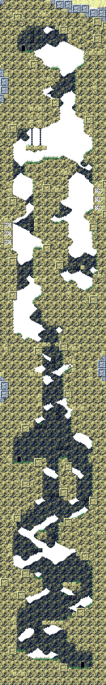

Table des Matières
Page d'accueil
Guide
Introduction
Pas à pas
Zones de la carte
Zones de la Première Caverne
Point de départ?
Première caverne
Ermite Armurier
Zones du Village Mimiga
Village Mimiga
Ferme Yamashita
Hôtel de ville
Tour Mimiga
Réservoir
Cimetière
Refuge de Pignon
Zones des Canalisations
Canalisations S
Canalisations E
Canalisations N
Salle de Sauvegarde
Contrôle du débit
Zones de Grasstown
Grasstown
Résidence de Grasstown
Tour de Grasstown
Salle du Téléporteur
Salle du générateur
Salle de Sauvegarde
Ancien entrepôt
Zones des Tréfonds
Les Tréfonds
Cabane des Tréfonds
Salle Cachée
Sanctuaire
Labyrinthe du gardien
Sanctuaire Intérieur
Zones de la Zone des Sables
Vanne d'Érosion
Zone des Sables
Cave à vin
Salle de Sauvegarde
Atelier
Demeure de Misery
Passage Poussiéreux
Chambre à Air
Zones du Labyrinthe
Ancienne Clinique
Labyrinthe O
Labyrinthe S
Salle de Sauvegarde
Magasin du Labyrinthe
Labyrinthe L
Cul-de-sac
Labyrinthe P
Revolutionarium
Zones de l'Aqueduc
Cheminée
Salle du Téléporteur
Aqueducs
Salle de Sauvegarde
Spéléothème
Salle de Préparation
Zones de l'Installation
Conduit
Petit Pavillon
Installation Abandonnée
Néant
Salle de Préparation
Noyau
Zones de l'Incubateur
Incubateur
Demeure de Cthulhu?
Incubateur (Verso)
Salle d'Observation d'Œufs?
Salle adjacente
Œuf No. 00
Paroi Extérieure
Salle de l'Horloge
Zones Jadis Sacrées
Jardin du diable
Terre Jadis Sacrée
Passage?
Chambre des Statues
Corridor
Zones des Plantations
Observatoire
Plantation
Zone de Repos
Ancienne Geôle
Dernière Caverne
Balcon
Construction
Zones Inconnues
Maison de Jenka
Objets cachés
Secrets
Cheminée
Passez votre souris sur n'importe quel objet pour voir de quoi il s'agit. Cliquez sur les portes pour accéder à leur carte respective.
